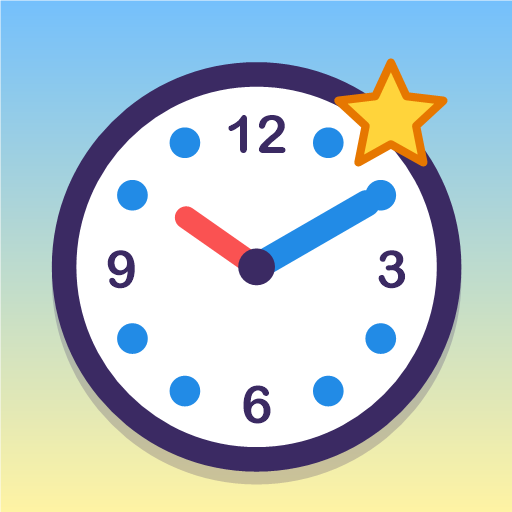
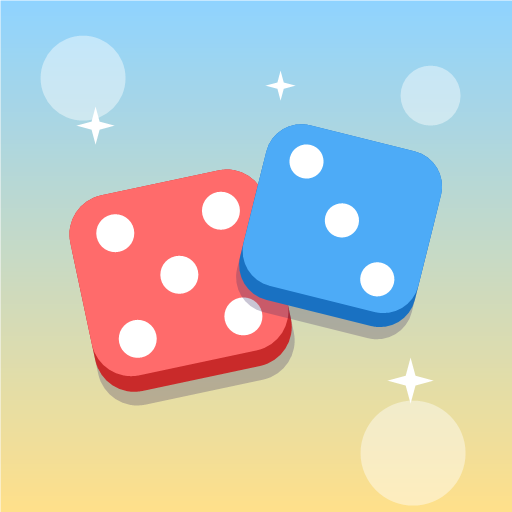
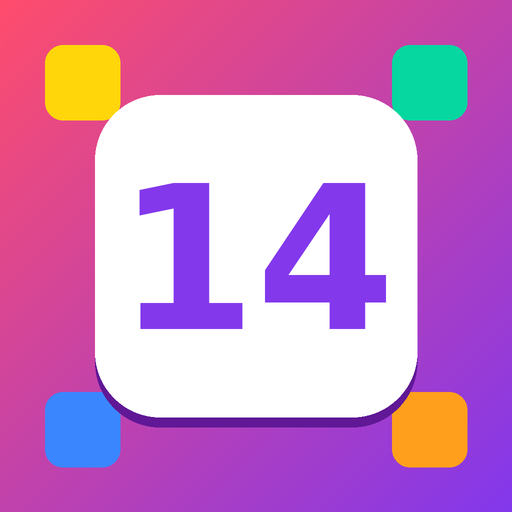
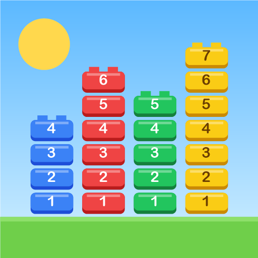
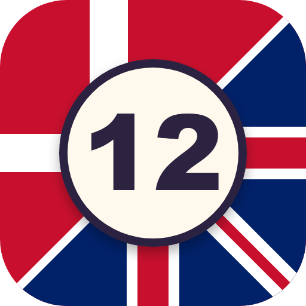
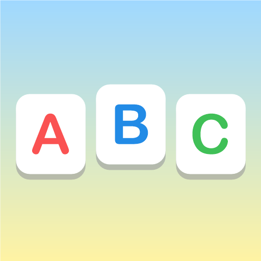
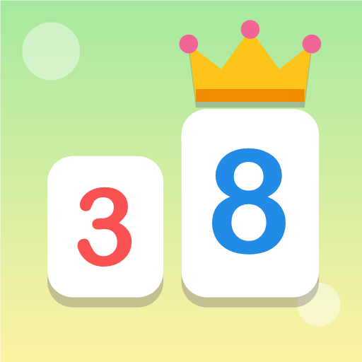

Ur-mesterClockMaster
Et klokkeslæt vises med tal og med ord – fx „kvart i fire“ eller „femten femogfyrre“. Stil uret med den lille røde timeviser og den store blå minutviser, og tryk Tjek. Rigtigt svar giver stjerne og fanfare.
Spil ➜
Tæl terningerneCount the Dice
Terningerne trilles, og du tæller øjnene og trykker på den rigtige sum blandt ti tal. Et rigtigt svar giver konfetti og en stjerne – et forkert giver bare et venligt „prøv igen“.
Spil ➜
FridaTalFør og efter
Et tal mellem 2 og 19 bliver vist, og du skal finde tallet lige før og lige efter på en plade med tallene 1–20. Glad lyd, når begge er rigtige.
Spil ➜
TaltårneNumber Towers
Byg fire farverige tårne fra 1 til 10. Find klodsen med den rigtige farve og det næste tal – hver etage spiller en tone højere. Med hjælpeknap og stopur.
Spil ➜
TaltrænerNumber Trainer
Lær tallene 0–99 på dansk eller engelsk med indtalte lyde. Se tallet og sig det højt, før svaret kommer – eller hør tallet og gæt, hvordan det ser ud.
Spil ➜
StavemesterStavespil
Et billede vises med en kasse til hvert bogstav, og du skal stave ordet på et stort tastatur med A–Å. Spørgsmålstegnet viser næste bogstav, og et færdigt ord giver hurra.
Spil ➜
Hvem er størst?Who Is Biggest?
To tal står på store kort – tryk på det største! Rigtigt svar giver stjerne, krone, konfetti og fanfare. Fire niveauer, fra 1–12 og helt op til 99.
Spil ➜